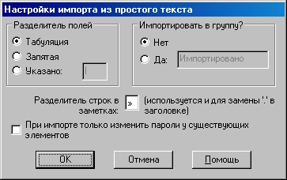

Password Safe позволяет импортировать данные о паролях из других форматов. Данные файлы могут быть сформированы другими приложениями, экспортированы из таблиц, или даже составлены вручную в текстовом редакторе.
Password Safe поддерживает следующие форматы:
Чтобы импортировать элементы из другого контейнера Password Safe, запустите ещё одну копию Password Safe (должен быть разрешён запуск нескольких экземпляров на вкладке «Управление→Настройки→Система») и откройте нужный контейнер. Затем перетяните из него необходимые элементы или группы в первый контейнер.
Импортируемые текстовые файлы содержат одну или несколько записей о паролях. Поля внутри элемента разделяются специальным символом. Информация об элементе может быть записана в одну или несколько строк. Описание формата импорта из текстового файла находится в разделе Формат текстового экспорта и импорта.
Разделитель полей используется для выделения полей в текстовых строках. Также можно указать имя группы, в которую будут помещены все импортированные элементы.

XML (eXtensible Markup Language) — распространённый формат для передачи данных между приложениями. Password Safe может импортировать XML-файлы, соответствующие схеме pwsafe.xsd, распространяемой вместе с Password Safe.